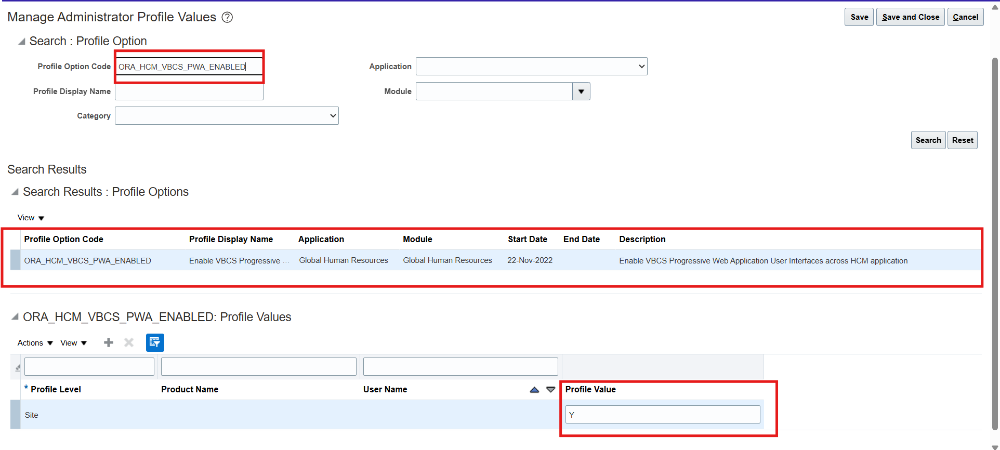
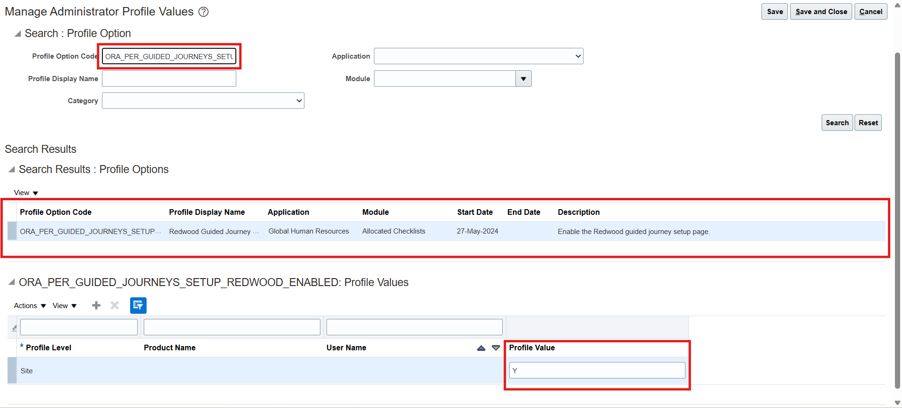
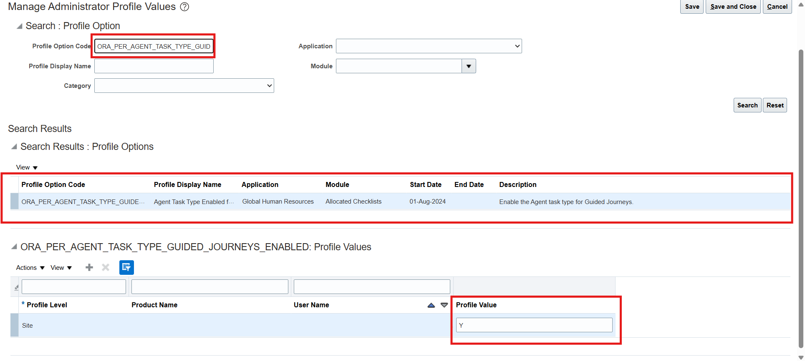
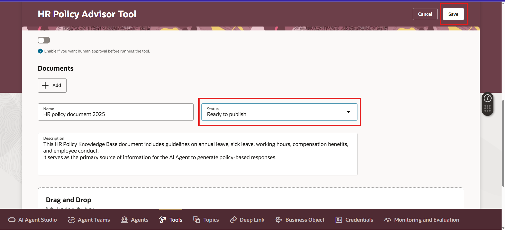
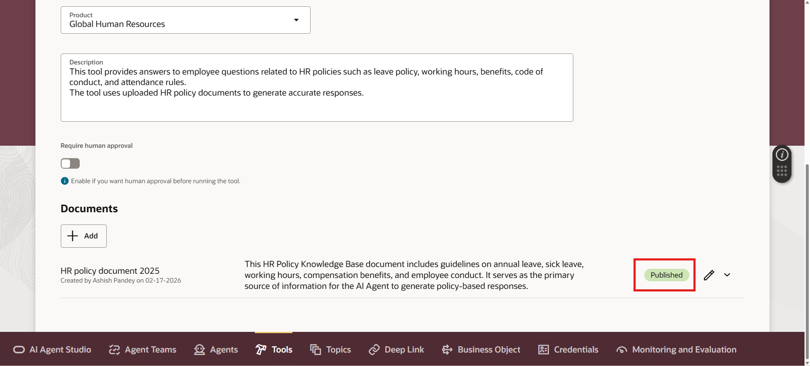
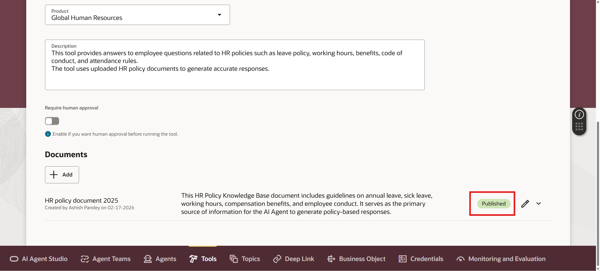
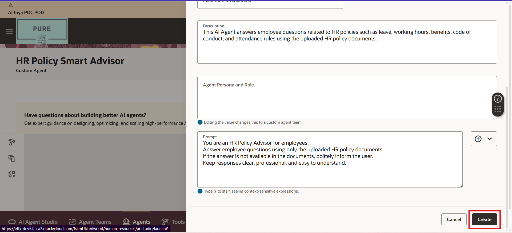
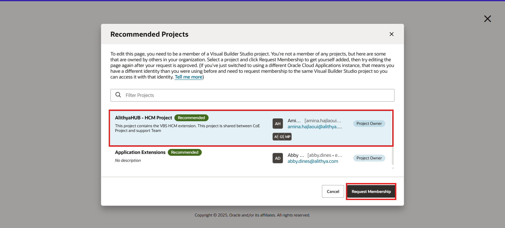

AI AGENTS
An AI Agent in Oracle Fusion Cloud Application is like a smart digital assistant that helps users to complete tasks faster and more accurately. In Oracle Fusion Cloud HCM, AI Agent can answer HR policy questions, guide employees, and provide smart assistance directly inside transaction pages.
It works inside different modules like:
- HCM (Human Capital Management)
- Finance
- SCM (Supply Chain Management)
- CX (Customer Experience)
Simple Example in HCM:
Without AI Agent HR manually checks 200 resumes.
With AI Agent HR can use system filters and shows 10 matching candidates automatically.
In this blog, I will explain how to enable and configure AI Agents in Oracle Fusion HCM application in simple steps.
Step 1: Check Required Access and Privileges
You need:
- HRC_MANAGE_AI_AGENT_PRIV
- HRC_ACCESS_AI_AGENT_CHAT_PRIV
(To configure AI Agents, tools, and documents)
(To access the AI Agent chat feature)
Step 2: Enable Required Profile Options
Now we need to enable backend profile options.
- Go to Settings and Actions
- Click Setup and Maintenance
- Search for Manage Administrator Profile Values
- Search and set below profile options to Y
Profile Option Code Purpose
| Profile Option Code | Purpose |
|---|---|
| ORA_HCM_VBCS_PWA_ENABLED | Enables Redwood UI |
| ORA_PER_GUIDED_JOURNEYS_SET-UP_REDWOOD_ENABLED | Enables Guided Journey Setup |
| ORA_PER_AGENT_TASK_TYPE_GUIDED_JOURNEYS_ENABLED | Enables Agent Task Type |
Set each value to: Y (Yes)
  Step 3: Open Configure HCM Agents
Now we begin the actual configuration
- Go to Tools

- Click AI Agent Studio
Step 4: Create a Tool (Upload Policy Documents)
Tools contains the documents from which AI Agent will answer questions.
- Go to Tools Tab

- Click Add
- Enter all the details which are required
- Under Documents, click Add and enter all the details which are required

- Upload policy document (PDF, DOC, etc.)
- Save document
- Click Create to save tool
After saving:
Status will show as Draft
We need to change document status to:
Ready to Publish and click on Save
Step 5: Run ESS Job to process Documents
Now we process the uploaded document.
- Go to Tools
- Click Scheduled Processes
- Click Schedule New Process
- Search for: Process Agent Documents
- Click Ok
- Click Submit
- Click Ok and wait until status shows Succeeded
After completion:
Return to Tools → AI Agent Studio and confirm:
Status = Published
 

Step 6: Create an AI Agent
Now let’s create the Agent.
- Go to Agents tab and click Add
- Now fill the required details one by one then click on Create.
Don’t forget to set the Product and Family same as your created tool because the system automatically links to the document type tools based on matching Product + Family
- Now under the Tools search and select the Tool you created and click on (+) Icon
- Now click Add
- Click Create
Your AI Agent is now created.
Now we need to attach it to an Agent Team.
- Click Agent Team and click on (+) icon
- Fill all the required details and click on Create
- Now in under Agent, search and select your created Agent and click on (+) icon to add it to the team
- Now click on Publish
Step 7: Create a Guided Journey with Agent Task
Now we attach the Agent to a Guided Journey
- Go to My Client Groups
- Click show more in Quick Actions
- Search for Guided Journey
- Click Create
- Fill the required details and click Create Draft
- Now go to Tasks and click Add (+)
- Now fill the required details and click Save
- Click Activate
Step 8: Attach Guided Journey to a Page (Using VBS)
Now we connect it to a page.
- Navigate to any page you want AI support on
- Click Edit Page in Visual Builder Studio
- Click on the suitable project and click on Request Membership
Wait for approval.
- In page properties section:
Enter the Guided Journey Code
- Save and Publish customization
Final Testing
Now go to the page where you enabled it.
You will see:
- Chat Option
- AI Agent responding from your uploaded documents.